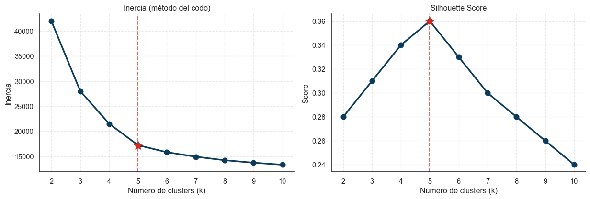

Código
import pandas as pd
import numpy as np
import matplotlib.pyplot as plt
import seaborn as sns
sns.set_theme(style="white")
COLOR_PRIMARY = "#0B3C5D"
COLOR_SECONDARY = "#D82822"
# Valores que preservan la forma cualitativa de las curvas reales
k_range = list(range(2, 11))
inercia = [42000, 28000, 21500, 17200, 15800, 14900, 14200, 13700, 13300]
silhouette = [0.28, 0.31, 0.34, 0.36, 0.33, 0.30, 0.28, 0.26, 0.24]
fig, axes = plt.subplots(1, 2, figsize=(13, 4.5))
axes[0].plot(k_range, inercia, 'o-', color=COLOR_PRIMARY, linewidth=2.5, markersize=8)
axes[0].axvline(x=5, color=COLOR_SECONDARY, linestyle='--', linewidth=1.5, alpha=0.7)
axes[0].scatter([5], [17200], color=COLOR_SECONDARY, s=200, zorder=5, marker='*')
axes[0].set_title("Inercia (método del codo)")
axes[0].set_xlabel("Número de clusters (k)")
axes[0].set_ylabel("Inercia")
axes[0].grid(True, linestyle='--', alpha=0.4)
axes[1].plot(k_range, silhouette, 'o-', color=COLOR_PRIMARY, linewidth=2.5, markersize=8)
axes[1].axvline(x=5, color=COLOR_SECONDARY, linestyle='--', linewidth=1.5, alpha=0.7)
axes[1].scatter([5], [0.36], color=COLOR_SECONDARY, s=200, zorder=5, marker='*')
axes[1].set_title("Silhouette Score")
axes[1].set_xlabel("Número de clusters (k)")
axes[1].set_ylabel("Score")
axes[1].grid(True, linestyle='--', alpha=0.4)
sns.despine()
plt.tight_layout()
plt.show()